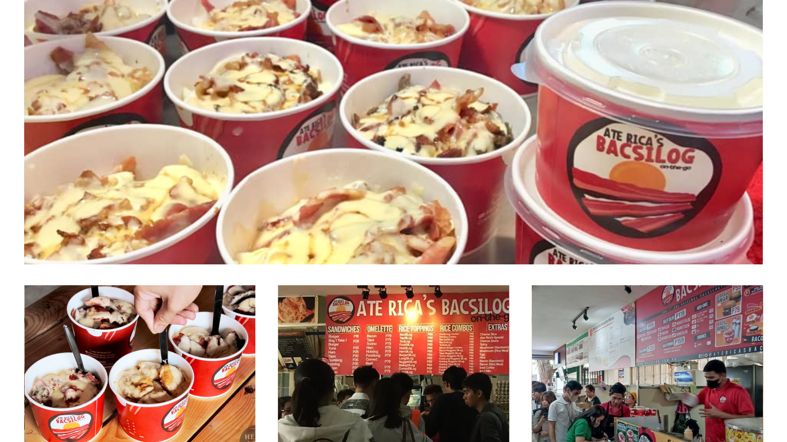

Ate Rica's Bacsilog
Food Stall
Located In: Agno Food Court
Address: 2305 Fidel A.Reyes, Malate
Opening Hours: 7:00 AM - 7:00 PM

Kween Yasmin
@ohkalmabb

Rica Penalosa
@ricapenalosa
We appreciate your feedback and apologize for the inconsistency with our bacon. Your comments are valuable, and we assure you that we are addressing this issue internally to ensure a more consistent and enjoyable experience for our guests.
It unfortunately, fails to live up to the hype, and the disappointment begins with the bacon. Whoever is in charge of cooking the bacon seems to have a wildly inconsistent approach. Some pieces are so overcooked they resemble brittle, tasteless strips, while others are undercooked and chewy.